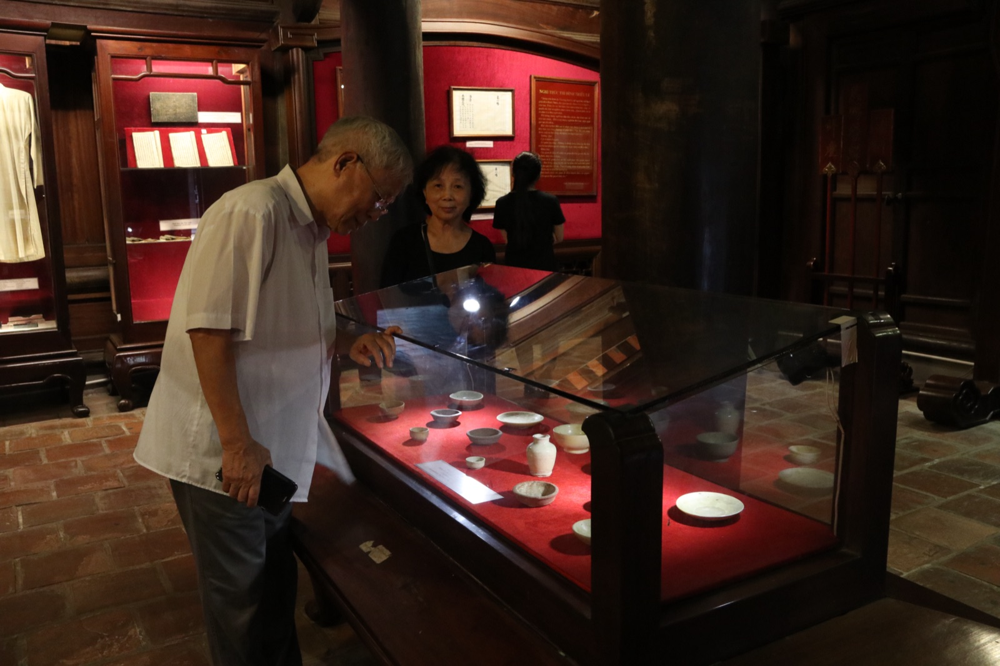
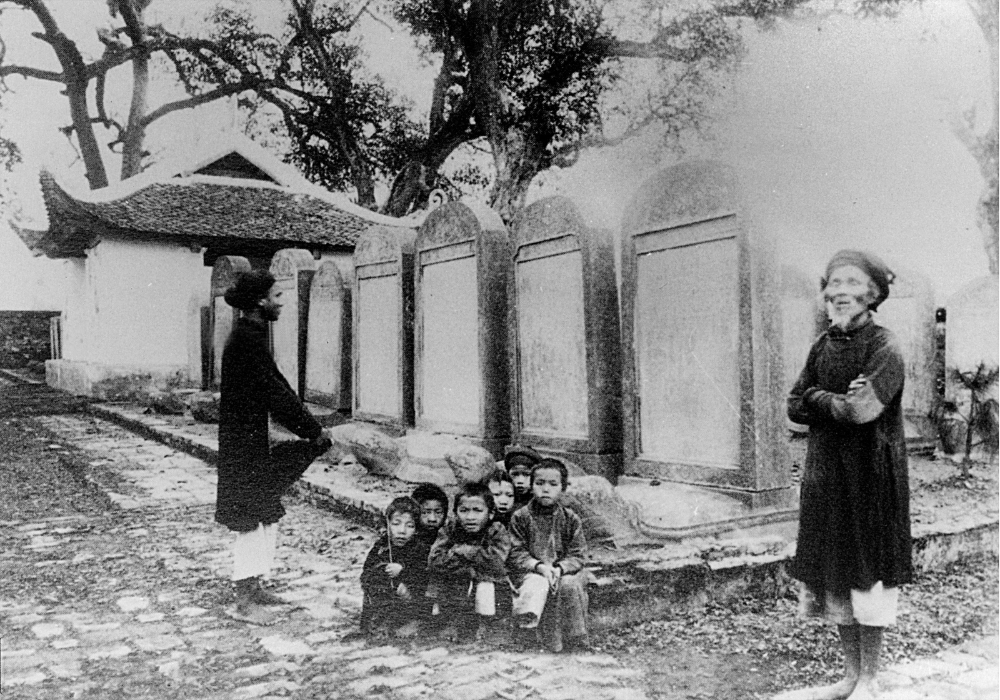
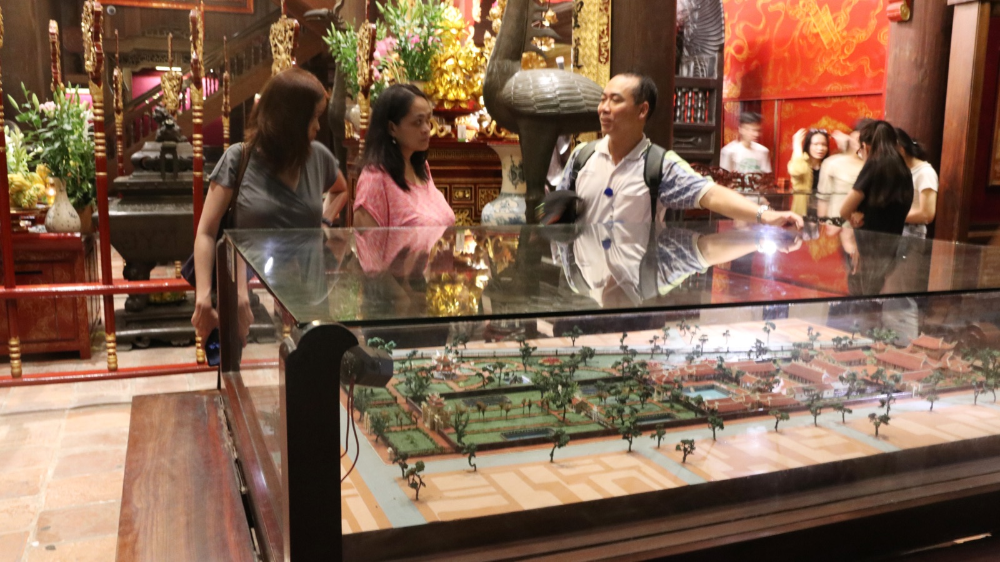

Ảnh
01
Thư viện
Thư viện Văn Miếu – Quốc Tử Giám lưu trữ sách và tài liệu về di sản văn hóa.
Xem chi tiết →
02
Không gian trải nghiệm số
Tương tác với nội dung số về lịch sử và di sản Văn Miếu qua màn hình cảm ứng và AR.
Xem chi tiết →
03
Dòng thời gian bia tiến sĩ
Khám phá 1.304 Tiến sĩ và 82 kỳ thi Đình qua 300 năm trên dòng thời gian tương tác.
Xem chi tiết →
04
Giáo dục di sản
Các chương trình giáo dục di sản dành cho học sinh từ mầm non đến THPT.
Xem chi tiết →